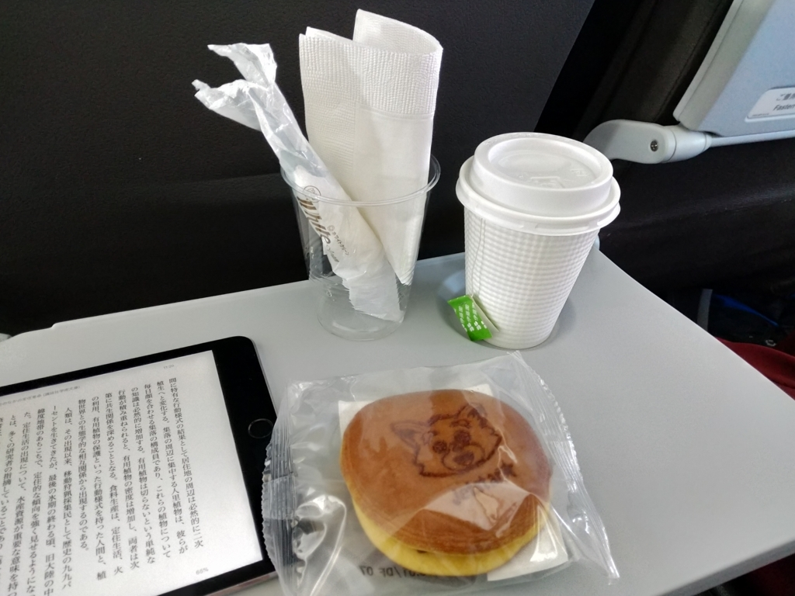

5月28日：愛媛に帰ってきた
執筆日時：
ジェットスターのチケットが安かったので、28日の午前の便で 成田 → 松山（午後の便は1万円超えてたけど、午前の便は 5,900 円だった）。1カ月ぶりに、松山に帰ってきました。空港からそのままタクシーに乗って自宅のベッドに転がり込んで、泥のように眠った。実家も快適だけど、なんだかんだ言って自分の家がいいのぅ。

久しぶりに乗ったジェットスター（最近は ANA ばっかりだった）はちょっと勝手が違い、自分で荷物タグ付けなきゃいけなかったり、機内で「バウチャー500円あるけど」「え、え？」みたいになった（なんかオプションの料金体系も複雑化してた）が、どら焼きと温かい緑茶のおかげで狭いシートでも楽しく過ごせました。
東京にいる間はほとんどブログも書けなかったし、本も読めなかったし、ましてやプログラミングも全然できてなくて、やりたいことが結構たまってる。今週中に荷解きと洗濯、仕事環境の再セットアップなんかを済ませて、早くそういうことにも取り組みたいなーって感じ。
とくに、6月16日はプロ生松山。懇親会の会場は抑えたので、募集ページも更新しなきゃならないのぅ。